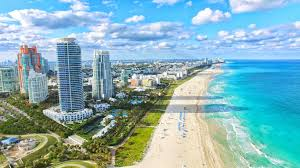
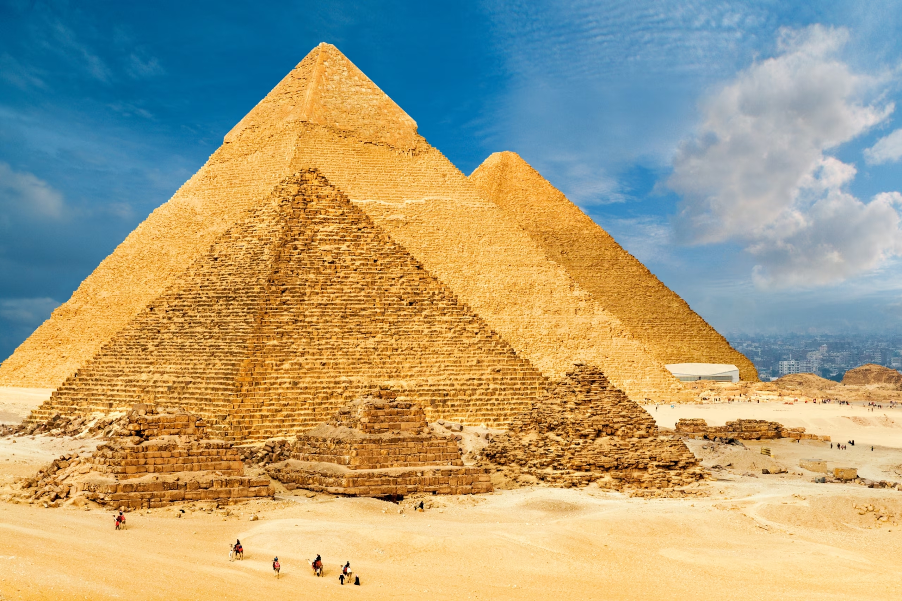
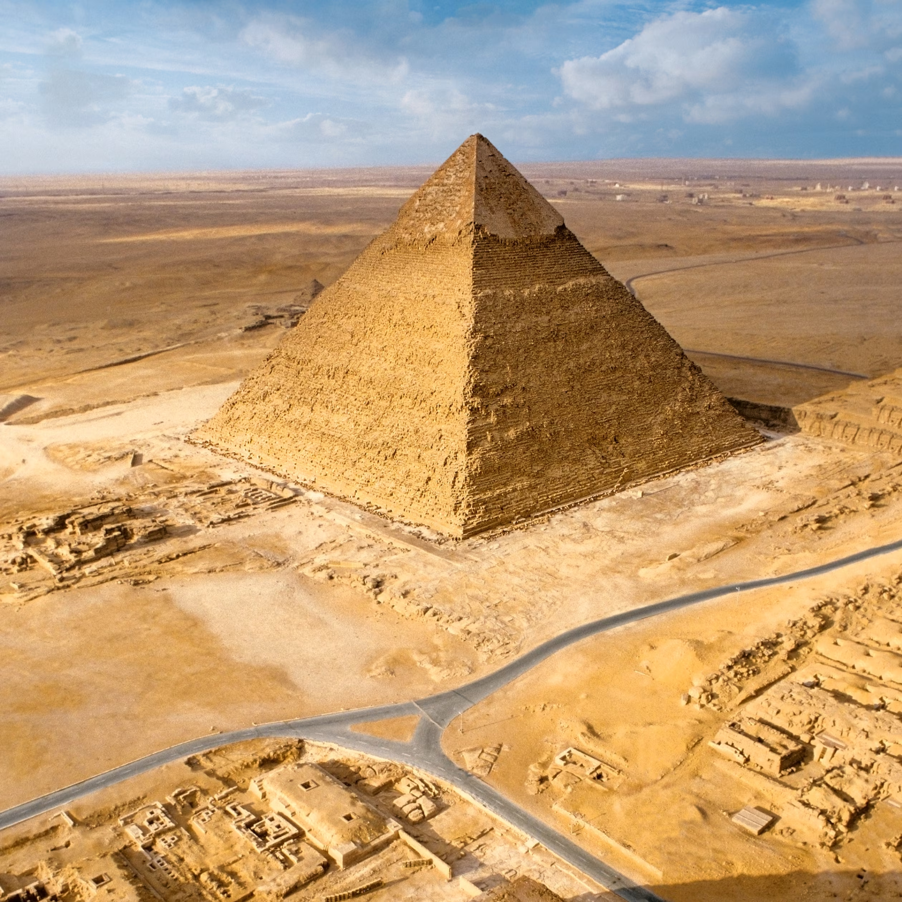
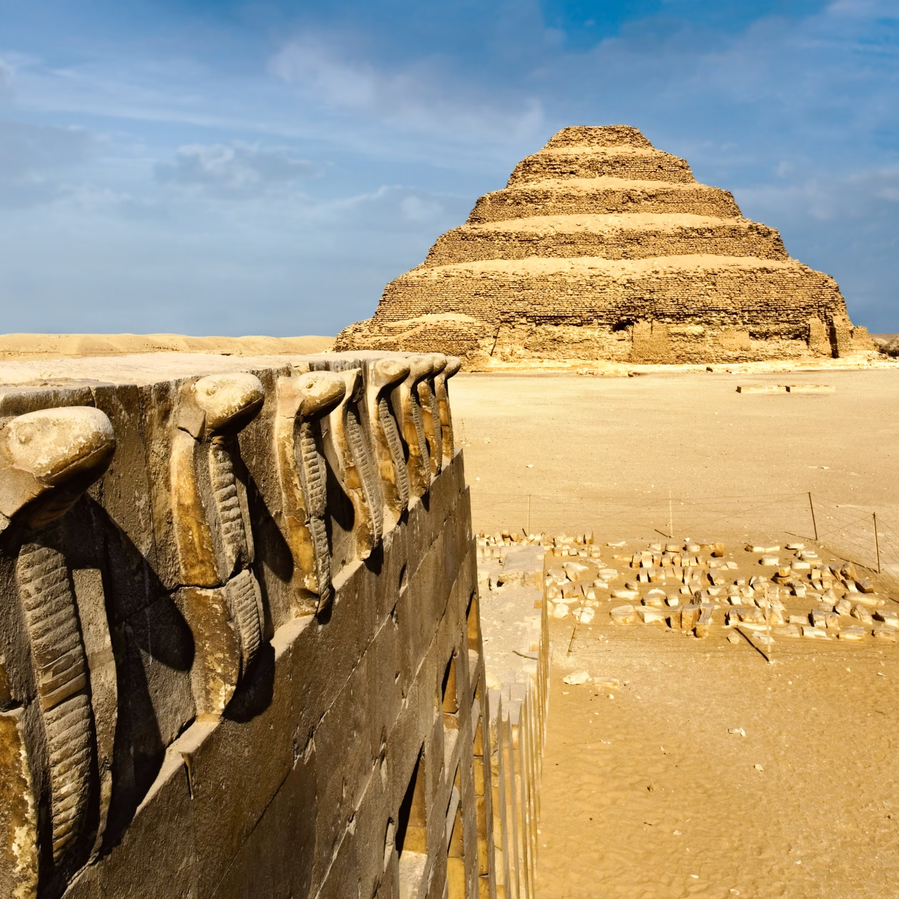

Miami Beach is an iconic destination that perfectly blends natural beauty with urban sophistication, offering pristine beaches, a vibrant nightlife, and a rich cultural heritage. The Art Deco Historic District adds a touch of history with its colorful, retro architecture, while the diverse culinary scene provides a range of dining experiences from fresh seafood to international cuisines. With a legendary nightlife and a welcoming, multicultural community, Miami Beach is an ideal choice for anyone seeking relaxation, entertainment, and a taste of diverse cultures, all in one unforgettable location.
miami beach images
This is an aerial view of miami beach which is very beautifulFantastic and amazing place in miami

The southern portion of Miami Beach, known as South Beach (foreground), and Downtown Miam
Parking list for miami beach
Clothing
Swimwear: Multiple swimsuits for the beach and pool.
Cover-ups: Lightweight beach cover-ups or sarongs.
Casual Wear: T-shirts, tank tops, and shorts for daytime activities.
Flip-Flops/Sandals: Comfortable footwear for the beach and walking around.
Sunglasses: UV-protected sunglasses for eye protection.
Beach Essemtial
Beach Towel: A large towel or beach blanket.
Beach Bag: A tote bag for carrying your essentials to the beach.
Reusable Water Bottle: Staying hydrated is key.
Snorkel Gear: If you plan on snorkeling.
Egypt Pyraminds
Visiting the pyramids in Egypt offers a once-in-a-lifetime opportunity to connect with a history spanning over 4,500 years, as I stand before the awe-inspiring Great Pyramid of Giza and its neighboring monuments. The architectural brilliance and scale of these ancient wonders are captivating, while the surrounding sites like the Sphinx and nearby temples deepen my understanding of ancient Egyptian civilization. Choosing this destination allows me to experience the timeless allure of Egypt, where history, culture, and legend converge in a way that promises to be unforgettable.
Images of Egypt pyramids

this is an image of giza pyramnds in egypt

giza-plateau-great-pyramid

gizza pateau saqqara pyraminds
Parking list for egypt pyraminds
Clothing
Lightweight, Breathable Clothing: Cotton or linen shirts, pants, and dresses that keep you cool in the heat.
Scarf or Shawl: Useful for covering up in more conservative areas or protecting against sun and dust.
Layered Clothing: Light layers for the cool desert mornings and evenings, such as a light jacket or sweater.
lightweight, Breathable Clothing: Cotton or linen shirts, pants, and dresses that keep you cool in the heat.
personal care
Lip Balm with SPF: To prevent dry, chapped lips.
Insect Repellent: To protect against mosquitoes, especially if you're visiting during the evening.
Moisturizer: The desert air can be very drying on the skin.
Sunscreen: High SPF, water-resistant sunscreen to protect against the intense sun.
Great walls of china
Visiting the Great Wall of China offers an incredible opportunity to experience one of the world’s most extraordinary feats of human engineering, stretching over 13,000 miles across northern China. As I walk along the ancient structure, I’ll be immersed in a history spanning over 2,000 years, marveling at the wall’s magnitude and the breathtaking landscapes it traverses. Each section of the wall tells its own unique story, from the well-preserved areas to the more rugged, untouched parts, providing a diverse and enriching experience. Choosing to visit the Great Wall means exploring a symbol of Chinese strength and ingenuity, while also engaging with the rich cultural heritage that surrounds this iconic landmark.
The Jinshanling section in Hebei Province, China, pictured here, is only a small part of the wall that stretches over 4,000 kilometers (2,500 miles).The Great Wall of China is one of the most notorious structures in the entire world.Great Wall of China—that it is one of the only man-made structures
Parking list for china great walls
Clothing
Comfortable Walking Shoes: Sturdy, broken-in shoes or hiking boots for trekking along the wall.
Breathable Clothing: Lightweight, moisture-wicking shirts and pants for comfort during hikes.
Rain Jacket/Poncho: A waterproof jacket or poncho in case of unexpected rain.
Scarf/Gloves: If visiting during the cooler months, these will help keep you warm.
Personal Care
Insect Repellent: To ward off any bugs, especially in more rural areas.
Sunscreen: High SPF sunscreen to protect against the sun's rays.